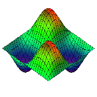

|
Maple ist ein
Computeralgebrasystem
(CAS) und kann symbolisch rechnen, was es vom einfachen numerischen Rechner
unterscheidet.
In den Naturwissenschaften ist der Einsatz solcher CAS heutzutage unverzichtbar.
Es gibt neben Maple andere Produkte wie bspw. Mathematica,
aber an baden-württembergischen Schulen wird ausschließlich Maple eingesetzt.
Wann ist der Einsatz von Maple sinnvoll?
Abgesehen davon, dass man den Umgang mit einer Programmiersprache lernen sollte,
lassen sich mit Maple Rechnungen schnell und richtig durchführen.
So spart man wertvolle Zeit.
Allerdings besteht die Gefahr, dass der Rechenweg und das Rechenprinzip unklar bleiben
und Maple eine Black Box ist.
Eine andere Fähigkeit des Programmes scheint mir viel bedeutender: die Visualisierung.
In meiner Schulzeit gab es keine Animationen vom Grenzwertprozess oder einigermaßen
durchschaubare 3D-Grafiken in der Geometrie.
Neben Geogebra ist Maple daher für mich als Lehrenden sehr wertvoll und fester Bestandteil meines Unterrichts.

|